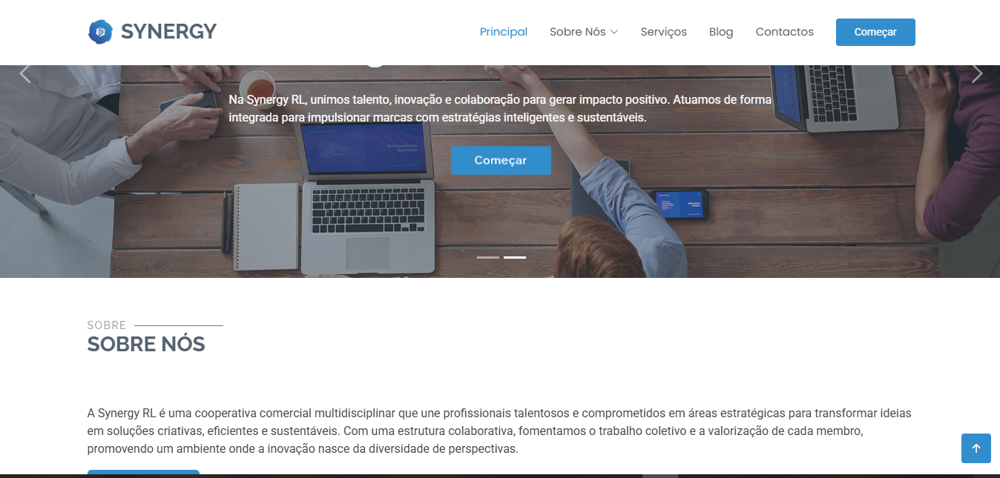
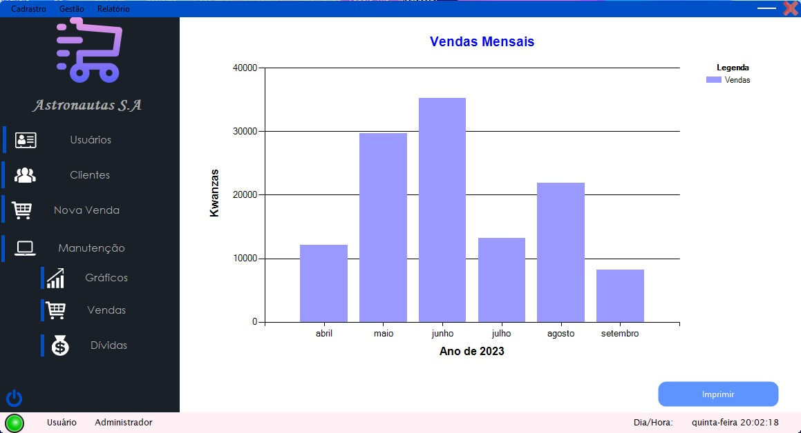
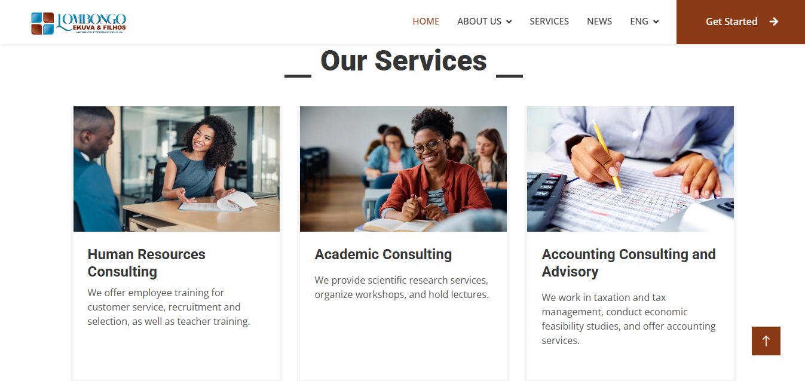
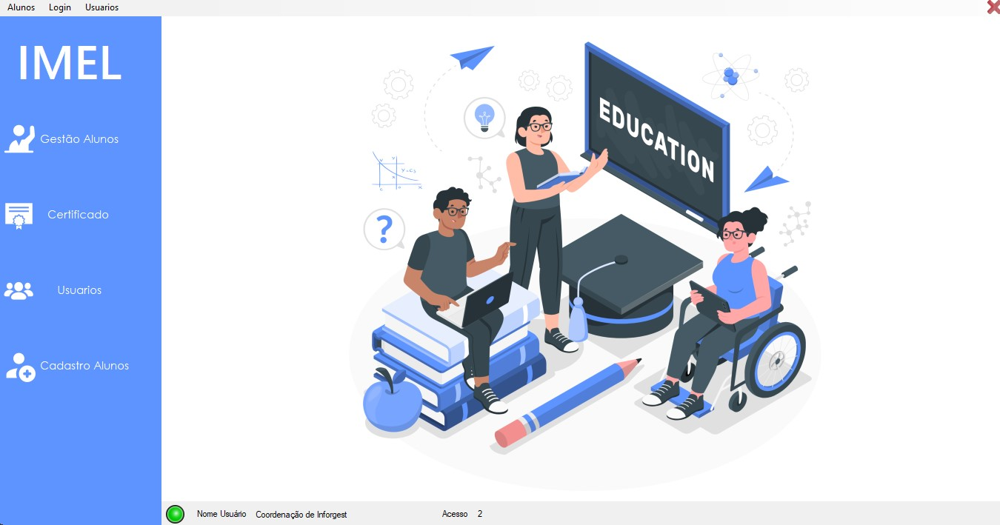
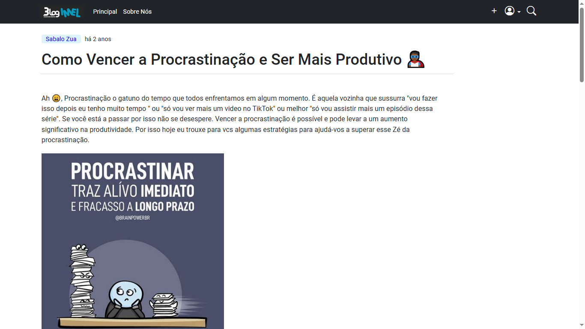

Sabalo Zua
Programador
Criação de softwares
Dê um oláCriação de softwares
Dê um oláEstudante de Engenharia Informática | Desenvolvedor Full-Stack em formação Apaixonado por criar soluções funcionais e bem estruturadas para aplicações web e desktop.Desde que comecei o meus estudos com programção pode adquirir conhecimentos e experiências em projectos de desenvolvimento de softwares e aplicações,além também de adquirir competências e habilidades que muito me ajudaram na Criação e aplicação de soluções inovadoras e eficientes neste vasto ramo do desenvolvimento de softwares.
O BPA NET é uma plataforma digital oferecida pelo Banco de Poupança Angolano (BPA) que permite aos seus clientes realizar diversas operações bancárias de forma rápida, segura e conveniente. Através do BPA NET, os clientes podem realizar consultas de saldo e extrato, efectuar transferências entre contas BPA e para outros bancos, pagar contas, além de ter accesso a diversos outros serviços bancários, tudo isso de forma online, 24 horas por dia, 7 dias por semana.
Visitar site
Site institucional desenvolvido para a Synergy RL, uma cooperativa comercial multidisciplinar que reúne profissionais de diferentes áreas. A plataforma apresenta a identidade, os serviços e os valores da cooperativa, destacando a colaboração, a inovação e o compromisso em transformar ideias em soluções estratégicas e sustentáveis.
Visitar site
Este é software de gestão de Estoque e Vendas ele é solução abrangente para auxiliar a sua empresa a gerenciar o estoque e as vendas de forma eficiente. O software é projetado para atender às necessidades específicas do seu negócio e oferece uma ampla gama de recursos e funcionalidades.

Site institucional desenvolvido para a Lombongo Kuvu & Filhos, uma empresa de consultoria que oferece soluções em recursos humanos, consultoria acadêmica e contabilidade. A plataforma apresenta os serviços da empresa de forma clara e profissional, fortalecendo a sua presença digital e facilitando o contacto com clientes e parceiros.
Visitar site
Como um software de gerenciamento de notas e emisão de certificados, o sistema permite que você faça o armzenametos de notas de dos alunos de sua instituição de uma forma simplis e segura, emisão de certificados de final de curso,além disso o sistema também oferece a possiblidade de emisão relatorios personalizados das nostas dos alunos de cada turma certificados de conclusão de curso personalizados

Este é um blog criado para suprir a demanda espaços virtuais que estimulem a troca de informações entre os alunos da minha escola.Ele tem o objectivo de promover a interação estudantil propocionado um ambiente propício para o compartilhamento de ideias informações ou até mesmo experiencias entre os alunos da instituição.Ele é um blog com estrutura simples directa e muito intuitiva e funcional. Visite o site e dê uma olhada espero que goste.
Visitar siteVocê pode esparar:
Acredito que a comunicação eficaz é fundamental para o sucesso de qualquer projeto. Estou disponível para discutir suas necessidades, responder a perguntas e manter você informado sobre o progresso do projecto. Ouvireí atentamente seus feedbacks e sugestões para garantir que o produto final atenda às suas expectativas.
Cumprir prazos é uma prioridade para mim. Vou trabalhar com um cronograma realista e me esforçar para garantir que todas as etapas do projecto sejam concluídas dentro do prazo estabelecido. Se houver qualquer desafio que possa afectar o cronograma,comunicarei isso a você com antecedência e discutir as opções disponíveis.
Desenvolvo sistemas escaláveis e de alto desempenho, preparados para acompanhar o crescimento do seu negócio. Trabalho com arquiteturas eficientes, código bem estruturado e soluções confiáveis para garantir rapidez, estabilidade e uma boa experiência para os usuários.
Na minha jornada de desenvolvimento de software, sua visão é a bússola que me guia. Estou ansiosos para ouvir todas as suas ideias, sonhos e desafios. Quero transformar suas necessidades em realidade e criar soluções tecnológicas sob medida para atender às suas expectativas. Este é o seu espaço para compartilhar seus insights e conceitos.
Estou interessado em ouvir sobre qualquer projecto, grande ou pequeno. Seja uma ideia inovadora para um software desktop, um conceito para uma plataforma web revolucionária,Diga o que o mantém acordado à noite. Não importa quão complexa seja a sua ideia ou quão simples seja o seu problema, acredito que cada desafio é uma oportunidade.
Minha paixão é dar vida a ideias. Mal posso esperar para ouvir à sua. Entre em contacto e vamos começar a criar algo incrível juntos!